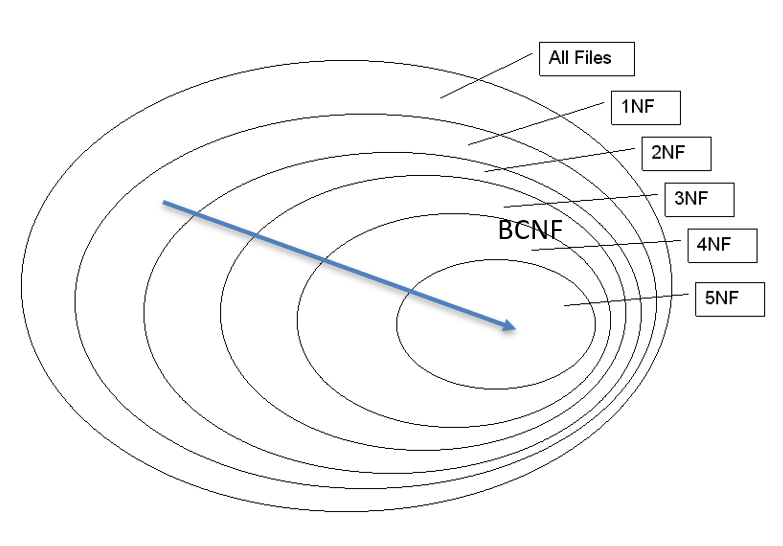

Analysis and Normal Forms 2
Lecture 11
Thursday - Feb 20, 2025
Housekeeping
Discussion items
Lecture topics
| Module | Week | Date | Day | Notes and Lectures | Activities and due dates |
|---|---|---|---|---|---|
| Normal forms | 6 | 2/20 | Thu | L11:Analysis and Normal Forms 2 | |
| Normal forms | 6 | 2/23 | Sun | Dis3:Normal forms | |
| Normal forms | 7 | 2/25 | Tue | L12:Analysis and Normal Forms 3 | PQ3:Analysis and Normal Forms |
| Normal forms | 7 | 2/27 | Thu | L13:Analysis and Normal Forms 4 | |
| Normal forms | 7 | 3/2 | Sun | Prj5:Design Documentation | |
| Normal forms | 8 | 3/4 | Tue | L14:Analysis and Normal Forms 5 | |
| Normal forms | 8 | 3/6 | Thu | L15:Intro to SQL | Q3:Analysis and Normal Forms |
| Normal forms | 8 | 3/9 | Sun | HW4:Analysis and Normal Forms |
BCNF Terms and Definitions
Schema - Example 1
A schema is a collection of one or more relations (tables). A schema is said to be in Boyce-Codd Normal Form when ALL the relations in the schema are in BCNF. BCNF minimizes redundancy and duplicate information.
| RID | Course | Instructor | Languages |
|---|---|---|---|
| 1 | CMSC508 Databases | John Leonard | SQL, Python, Perl |
| 2 | CMSC508 Databases | Alberto Cano | SQL, Python, C++ |
| 3 | CMSC475 UI/UX design | John Leonar | Javascript, Python |
| 4 | CMSC441 Capstone | Bob Dahlberg | COBOL, FORTRAN |
| 5 | CMSC320 Data Structures | Sarah Adams | C++, Java, Python |
| 6 | CMSC210 Software Design | Michael Turner | Java, C# |
| 7 | CMSC515 Computer Vision | Emily Parker | Python, MATLAB |
| 8 | CMSC430 Web Development | Jessica Clark | HTML, CSS, JavaScript |
| 9 | CMSC610 Machine Learning | Albert Cano | Python, R |
The schema on the left is an example of a table coming directly out of google forms or some other survey tool.
Each record contains groups of unrelated information, for example Course, Instructor and Languages.
We can see duplicate values (redundencies) within these groups.
We use functional dependencies to document these relationships.
Schema - Example 1
A schema is a collection of one or more relations (tables). A schema is said to be in Boyce-Codd Normal Form when ALL the relations in the schema are in BCNF. BCNF minimizes redundancy and duplicate information.
| RID | Course | Instructor | Languages |
|---|---|---|---|
| 1 | CMSC508 Databases | John Leonard | SQL, Python, Perl |
| 2 | CMSC508 Databases | Alberto Cano | SQL, Python, C++ |
| 3 | CMSC475 UI/UX design | John Leonar | Javascript, Python |
| 4 | CMSC441 Capstone | Bob Dahlberg | COBOL, FORTRAN |
| 5 | CMSC320 Data Structures | Sarah Adams | C++, Java, Python |
| 6 | CMSC210 Software Design | Michael Turner | Java, C# |
| 7 | CMSC515 Computer Vision | Emily Parker | Python, MATLAB |
| 8 | CMSC430 Web Development | Jessica Clark | HTML, CSS, JavaScript |
| 9 | CMSC610 Machine Learning | Albert Cano | Python, R |
Functional dependencies are an INPUT - that is, the database designer is responsible for describing the relationships between columns in their schema.
We define normal forms to describe the strictness of the functional dependencies. A higher normal form is more strict with it’s functional dependencies.
Given any schema \(S\) consisting of relations \(R\) and set of functional dependencies \(F\) for each \(R\), a schema is said to be in BCNF when all the relations in \(S\) are in BCNF.
Schema - Example 1
A schema is a collection of one or more relations (tables). A schema is said to be in Boyce-Codd Normal Form when ALL the relations in the schema are in BCNF. BCNF minimizes redundancy and duplicate information.
| RID | Course | Instructor | Languages |
|---|---|---|---|
| 1 | CMSC508 Databases | John Leonard | SQL, Python, Perl |
| 2 | CMSC508 Databases | Alberto Cano | SQL, Python, C++ |
| 3 | CMSC475 UI/UX design | John Leonar | Javascript, Python |
| 4 | CMSC441 Capstone | Bob Dahlberg | COBOL, FORTRAN |
| 5 | CMSC320 Data Structures | Sarah Adams | C++, Java, Python |
| 6 | CMSC210 Software Design | Michael Turner | Java, C# |
| 7 | CMSC515 Computer Vision | Emily Parker | Python, MATLAB |
| 8 | CMSC430 Web Development | Jessica Clark | HTML, CSS, JavaScript |
| 9 | CMSC610 Machine Learning | Albert Cano | Python, R |
The schema on the left which consists of only one relation.
The schema contains non-atomic attributes, partial, transitive, and multi-valued dependencies and is not in BCNF.
Through a process of decomposition we remove non-atomic attributes, partial, transitive and multivalued dependencies and achieve BCNF.
Schema - Example 2
This schema IS in BCNF.
| RID | Course Code | First | Last | Language |
|---|---|---|---|---|
| 1 | CMSC508 | John | Leonard | SQL |
| 1 | CMSC508 | John | Leonard | Python |
| 1 | CMSC508 | John | Leonard | Perl |
| 2 | CMSC508 | Alberto | Cano | SQL |
| 2 | CMSC508 | Alberto | Cano | Python |
| 2 | CMSC508 | Alberto | Cano | C++ |
| 3 | CMSC475 | John | Leonard | Javascript |
| 3 | CMSC475 | John | Leonard | Python |
| 4 | CMSC441 | Bob | Dahlberg | COBOL |
| 4 | CMSC441 | Bob | Dahlberg | FORTRAN |
| 5 | CMSC320 | Sarah | Adams | C++ |
| 5 | CMSC320 | Sarah | Adams | Java |
| 5 | CMSC320 | Sarah | Adams | Python |
| 6 | CMSC210 | Michael | Turner | Java |
| 6 | CMSC210 | Michael | Turner | C# |
| 7 | CMSC515 | Emily | Parker | Python |
| 7 | CMSC515 | Emily | Parker | MATLAB |
| 8 | CMSC430 | Jessica | Clark | HTML |
| 8 | CMSC430 | Jessica | Clark | CSS |
| 8 | CMSC430 | Jessica | Clark | JavaScript |
| 9 | CMSC610 | Alberto | Cano | Python |
| 9 | CMSC610 | Alberto | Cano | R |
| Course Code | Course Name |
|---|---|
| CMSC210 | Software Design |
| CMSC320 | Data Structures |
| CMSC430 | Web Development |
| CMSC441 | Capstone |
| CMSC475 | UI/UX design |
| CMSC508 | Databases |
| CMSC515 | Computer Vision |
| CMSC610 | Machine Learning |
| First | Last |
|---|---|
| Alberto | Cano |
| Bob | Dahlberg |
| Sarah | Adams |
| John | Leonard |
| Michael | Turner |
| Emily | Parker |
| Jessica | Clark |
| Language |
|---|
| SQL |
| Python |
| Perl |
| C++ |
| Javascript |
| COBOL |
| FORTRAN |
| Java |
| C# |
| MATLAB |
| HTML |
| CSS |
| R |
| RID |
|---|
| 1 |
| 2 |
| 3 |
| 4 |
| 5 |
| 6 |
| 7 |
| 8 |
| 9 |
Normal Forms - Overview
Database normalization is the process of reorganizing the relations \(R\) in a schema \(S\) to minimize data redundancy.
Normalization involves subdividing a relation \(R\) into less redundant and smaller relations (fewer columns) without losing information by leveraging the functional dependencies (relationships) of \(R\).
The objective is to isolate related data to minimize duplicates and so modifications of an attribute can be made in just one table and then propagated through the rest of the database using the defined foreign keys and joins.
Escalating through the different normal forms removes more and more redundancy.

Normal Forms - Defined
- First Normal Form - 1NF
- A relation is in 1NF if and only if the domain of each attribute contains only atomic (indivisible) values and the value of each attribute contains only a single value from that domain.
- Second Normal Form - 2NF
- A relation is in 2NF if and only if it is in 1NF and all non-prime attributes (attributes not part of any candidate key) are fully functionally dependent on the entire candidate key.
- Third Normal Form - 3NF
- A relation is in 3NF if and only if it is in 2NF, and it has no transitive dependencies.
- Boyce-Codd Normal Form - BCNF
- A relation is in BCNF if and only if it is in 1NF, and for every non-trivial functional dependency A -> B, A is a superkey.
- Fourth Normal Form - 4NF
- A relation is in 4NF if and only if it is in BCNF, and it has no multi-valued dependencies.
- Fifth Normal Form - 5NF
- A relation is in 5NF if and only if it is in 4NF, and it avoids join dependencies.
- Sixth Normal Form - 6NF
- A relation is in 6NF if and only if it is in 5NF, and it further eliminates all join dependencies and assures that every join dependency can be enforced by the superkeys of the relation.
- Seventh Normal Form - 7NF
- A relation is in 7NF if and only if it is in 6NF, and it eliminates all combinatorial join dependencies, ensuring that every possible join dependency is addressed.
First normal form - 1NF
A relation is in 1NF if and only if the domain of each attribute contains only atomic (indivisible) values and the value of each attribute contains only a single value from that domain.
| RID | Course | Instructor | Languages |
|---|---|---|---|
| 1 | CMSC508 Databases | John Leonard | SQL, Python, Perl |
| 2 | CMSC508 Databases | Alberto Cano | SQL, Python, C++ |
| 3 | CMSC475 UI/UX design | John Leonar | Javascript, Python |
| 4 | CMSC441 Capstone | Bob Dahlberg | COBOL, FORTRAN |
| 5 | CMSC320 Data Structures | Sarah Adams | C++, Java, Python |
| 6 | CMSC210 Software Design | Michael Turner | Java, C# |
| 7 | CMSC515 Computer Vision | Emily Parker | Python, MATLAB |
| 8 | CMSC430 Web Development | Jessica Clark | HTML, CSS, JavaScript |
| 9 | CMSC610 Machine Learning | Albert Cano | Python, R |
Here is our starting relation - a table created by google forms or something.
This relation is NOT in first normal form.
First normal form - 1NF
A relation is in 1NF if and only if the domain of each attribute contains only atomic (indivisible) values and the value of each attribute contains only a single value from that domain.
| RID | Course Code | Course Name | First | Last | Language |
|---|---|---|---|---|---|
| 1 | CMSC508 | Databases | John | Leonard | SQL |
| 1 | CMSC508 | Databases | John | Leonard | Python |
| 1 | CMSC508 | Databases | John | Leonard | Perl |
| 2 | CMSC508 | Databases | Alberto | Cano | SQL |
| 2 | CMSC508 | Databases | Alberto | Cano | Python |
| 2 | CMSC508 | Databases | Alberto | Cano | C++ |
| 3 | CMSC475 | UI/UX design | John | Leonard | Javascript |
| 3 | CMSC475 | UI/UX design | John | Leonard | Python |
| 4 | CMSC441 | Capstone | Bob | Dahlberg | COBOL |
| 4 | CMSC441 | Capstone | Bob | Dahlberg | FORTRAN |
| 5 | CMSC320 | Data Structures | Sarah | Adams | C++ |
| 5 | CMSC320 | Data Structures | Sarah | Adams | Java |
| 5 | CMSC320 | Data Structures | Sarah | Adams | Python |
Starting with the previous relation, we decomposed individual columns such that each column contains only atomic elements.
We also removed multi-valued attributed by dropping them into their own row and duplicating the remaining attributes.
This relation is now in first normal form.
Questions
What is a candidate key for this relation?
That is, what combination of fields can I choose to uniquely identify each tuple in the relation?
First normal form - 1NF
Is this relation in first normal form? If so, why?
| EmployeeID | EmployeeName | DepartmentID | DepartmentName | ProjectID | ProjectName | ProjectBudget | Role |
|---|---|---|---|---|---|---|---|
| E001 | Alice | D01 | Marketing | P001 | AdCampaign | 10000 | Lead |
| E002 | Bob | D02 | Sales | P002 | SalesCRM | 20000 | Lead |
| E003 | Alice | D01 | Marketing | P002 | SalesCRM | 20000 | Analyst |
| E004 | Charlie | D03 | IT | P003 | ITInfra | 15000 | Admin |
| E002 | Bob | D02 | Sales | P001 | AdCampaign | 10000 | Tester |
Functional Dependencies
A functional dependency is a relationship between attributes:
EmployeeID → EmployeeName, DepartmentIDDepartmentID → DepartmentNameProjectID → ProjectName, ProjectBudgetEmployeeID, ProjectID → Role
YOU have to state the function dependencies up front FIRST.
Questions
Which columns do we need to uniquely identify each row in this table?
Restated, given that some columns can predict other columns, what is the minimum set of columns that can predict the row?
Given \(R\) and the set of functional depedencies \(FD\), what is the minimum candidate key of \(R\)?
Functional Dependencies - Defined
Given a relation \(R\), a set of attributes \(X\) is said to functionally determine another set of attributes \(Y\), (written \(X \rightarrow Y\)):
- If and only if, each value of \(X\) is associated with only one value of \(Y\), where \(X\) is the antecedent and \(Y\) is the consequent of the functional dependency.
A functional dependency \(X \rightarrow Y\) holds over relation \(R\) if, for every allowable instance \(r\) of \(R\):
- For \(𝑡_1 \in 𝑟\) and \(𝑡_2 \in 𝑟\), \(\Pi_{𝑋}(𝑡_1) = \Pi_{𝑋}(𝑡_2)\) implies \(\Pi_{𝑌}(𝑡_1) = \Pi_{𝑌}(𝑡_2)\)
If the \(X\) values agree then the \(Y\) values must also agree.
Summary
- A FD is a statement about relationships between attributes (columns).
- A FD can only and must be identified based on semantics of the application not on current values.
- Given some allowable instances of R, we can check if they violate some FDs, but we cannot tell if always holds over R!
- A FD applies only in one direction; a second FD is defined for the other direction.
Second normal form - 2NF
A relation is in 2NF if and only if it is in 1NF and all non-prime attributes (attributes not part of any candidate key) are fully functionally dependent on the entire candidate key.
Second normal form removes partial dependencies.
- candidate key
- A combination of attributes that uniquely identifies a tuple in a relation.
- prime- and non-prime attributes
- Prime attributes are the columns in the candidate key. Non-prime attributes are columns not in the candidate key. (unused attributes)
- fully functionally dependent
- Fully functionally dependent means that a non-prime attribute is functionally dependent on the entire candidate key, but not on any proper subset of that key.
- partial dependency
- A tuple is partially dependent if any non-prime attributes can be uniquely identify by a subset of the candidate key.
Second normal form - 2NF
- Is this relation in second normal form? Why or why not?
| EmployeeID | EmployeeName | DepartmentID | DepartmentName | ProjectID | ProjectName | ProjectBudget | Role |
|---|---|---|---|---|---|---|---|
| E001 | Alice | D01 | Marketing | P001 | AdCampaign | 10000 | Lead |
| E002 | Bob | D02 | Sales | P002 | SalesCRM | 20000 | Lead |
| E003 | Alice | D01 | Marketing | P002 | SalesCRM | 20000 | Analyst |
| E004 | Charlie | D03 | IT | P003 | ITInfra | 15000 | Admin |
| E002 | Bob | D02 | Sales | P001 | AdCampaign | 10000 | Tester |
Functional Dependencies
EmployeeID → EmployeeName, DepartmentIDDepartmentID → DepartmentNameProjectID → ProjectName, ProjectBudgetEmployeeID, ProjectID → Role
Candidate key
If this is a candidate key: { EmployeeID,ProjectID,Role }
EmployeeNameis a non-prime attribute. (It’s not in the candidate key).EmployeeNameis functionally dependent onEmployeeIDEmployeeIDis a subset of the candidate key (above).EmployeeNameis partially dependent on the key - PROBLEM!!!
A relation is in 2NF if and only if it is in 1NF and all non-prime attributes (attributes not part of any candidate key) are fully functionally dependent on the entire candidate key.
Second normal form - 2NF
We can move from 1NF to 2NF by ensuring that all non-prime attributes (those not part of a candidate key) are fully functionally dependent on the entire candidate key. In this case, a partial dependency occurs when a non-prime attribute depends only on part of a composite candidate key, rather than the entire key. Candidate key: {EmployeeID,ProjectID,Role}
| EmployeeID | EmployeeName | DepartmentID | DepartmentName |
|---|---|---|---|
| E001 | Alice | D01 | Marketing |
| E002 | Bob | D02 | Sales |
| E003 | Alice | D01 | Marketing |
| E004 | Charlie | D03 | IT |
| ProjectID | ProjectName | ProjectBudget |
|---|---|---|
| P001 | AdCampaign | 10000 |
| P002 | SalesCRM | 20000 |
| P003 | ITInfra | 15000 |
| Role |
|---|
| Lead |
| Analyst |
| Admin |
| Tester |
| EmployeeID | ProjectID | Role |
|---|---|---|
| E001 | P001 | Lead |
| E002 | P002 | Lead |
| E003 | P002 | Analyst |
| E004 | P003 | Admin |
| E002 | P001 | Tester |
Third Normal Form - 3NF
A relation is in 3NF if and only if it is in 2NF, and it has no transitive dependencies.
Third normal form removes transitive dependencies.
- candidate key
- A combination of attributes that uniquely identifies a tuple in a relation.
- prime- and non-prime attributes
- Prime attributes are the columns in the candidate key. Non-prime attributes are columns not in the candidate key. (unused attributes)
- transitive dependency
- A transitive dependency occurs when a non-prime attribute is indirectly dependent on a candidate key through another non-prime attribute.
Third Normal Form - 3NF
A relation is in 3NF if and only if it is in 2NF, and it has no transitive dependencies.
| EmployeeID | EmployeeName | DepartmentID | DepartmentName |
|---|---|---|---|
| E001 | Alice | D01 | Marketing |
| E002 | Bob | D02 | Sales |
| E003 | Alice | D01 | Marketing |
| E004 | Charlie | D03 | IT |
Look at DepartmentID and DepartmentName
DepartmentNameis transitively dependent onEmployeeIDbecause:DepartmentNamedepends onDepartmentID.DepartmentIDdepends onEmployeeID(since each employee belongs to a department).
Thus, DepartmentName is not directly dependent on EmployeeID but is transitively dependent via DepartmentID.
This kind of dependency violates 3NF (Third Normal Form), but is allowed in 2NF.
We can fix this by further decomposing this table into two smaller tables. This will remove duplicates of department D01.
Third Normal Form - 3NF
| EmployeeID | EmployeeName | DepartmentID |
|---|---|---|
| E001 | Alice | D01 |
| E002 | Bob | D02 |
| E003 | Alice | D01 |
| E004 | Charlie | D03 |
| ProjectID | ProjectName | ProjectBudget |
|---|---|---|
| P001 | AdCampaign | 10000 |
| P002 | SalesCRM | 20000 |
| P003 | ITInfra | 15000 |
| Role |
|---|
| Lead |
| Analyst |
| Admin |
| Tester |
| DepartmentID | DepartmentName |
|---|---|
| D01 | Marketing |
| D02 | Sales |
| D03 | IT |
| EmployeeID | ProjectID | Role |
|---|---|---|
| E001 | P001 | Lead |
| E002 | P002 | Lead |
| E003 | P002 | Analyst |
| E004 | P003 | Admin |
| E002 | P001 | Tester |
This decomposition eliminates all partial and transitive dependencies, ensuring that each non-prime attribute is fully functionally dependent on the entire key of its respective table.
Boyce-Codd Normal Form (BCNF)
A relation is in BCNF if and only if it is in 1NF, and for every non-trivial functional dependency \(A \rightarrow B\), \(A\) is a superkey.
- superkey
- any set of attributes that can uniquely identify a tuple in a relation. A superkey can be larger than necessary (i.e., it can contain extra attributes that are not needed to uniquely identify a tuple).
- candidate key
- a minimal superkey — meaning it contains no extraneous attributes. It is the smallest set of attributes that can uniquely identify a tuple.
- non-trival functional dependency
- For a functional dependency \(X \rightarrow Y\), the dependency is: Non-trivial if \(Y\) is not a subset of \(X\), Trivial if \(Y\) is a subset of \(X\), meaning the RHS attributes are already part of the LHS.
A non-trivial functional dependency is a type of functional dependency where the dependent attribute(s) on the right-hand side (RHS) are not a subset of the attributes on the left-hand side (LHS).
Non-trivial dependencies are key to database normalization because they represent actual relationships between different sets of attributes. Trivial dependencies do not provide new information about the relationships in the data.
Glossary of terms
Below are key terms and definitions. You’ll be defining these in homework 4.
- Schema
- Relation
- Attribute
- Tuple
- Functional dependency
- Candidate Key
- Primary Key
- Super Key
- Composite Key
- Prime attributes
- Non-prime attributes
- Armstrong’s axioms
- Partial Dependency
- Transitive Dependency
- Attribute Closure
- Decomposition
- Lossless decomposition
- Denormalization
- Trivial functional dependencies
- Closure of a set of FDs
- Minimum canonical cover
- First normal form (1NF)
- Second normal form (2NF)
- Third normal form (3NF)
- Boyce Codd normal form (BCNF)
- Fourth normal form (4NF)
Recognizing BCNF
Boyce-Codd Normal Form (BCNF) - Example 1
A relation \(R\) with functional dependencies \(F\) is in BCNF if for all \(X \rightarrow Y\) in \(F_{min}^+\):
- \(Y \subseteq X\) (the trival FD), OR
- \(X\) is a superkey for \(R\)
A relation is in BCNF if and only if it is in 1NF, and for every non-trivial functional dependency \(A \rightarrow B\), \(A\) is a superkey.
Trivial FD
| Language |
|---|
| SQL |
| Python |
| Perl |
| C++ |
| Javascript |
Trival: \(X \rightarrow X\)
Boyce-Codd Normal Form (BCNF) - Example 2
A relation \(R\) with functional dependencies \(F\) is in BCNF if for all \(X \rightarrow Y\) in \(F_{min}^+\):
- \(Y \subseteq X\) (the trival FD), OR
- \(X\) is a superkey for \(R\)
A relation is in BCNF if and only if it is in 1NF, and for every non-trivial functional dependency \(A \rightarrow B\), \(A\) is a superkey.
Non-composite key
| Course Code | Course Name |
|---|---|
| CMSC210 | Software Design |
| CMSC320 | Data Structures |
| CMSC430 | Web Development |
| CMSC441 | Capstone |
| CMSC475 | UI/UX design |
| CMSC508 | Databases |
| CMSC515 | Computer Vision |
| CMSC610 | Machine Learning |
Non-composite key: \(X \rightarrow Y\)
Boyce-Codd Normal Form (BCNF) - Example 3
A relation \(R\) with functional dependencies \(F\) is in BCNF if for all \(X \rightarrow Y\) in \(F_{min}^+\):
- \(Y \subseteq X\) (the trival FD), OR
- \(X\) is a superkey for \(R\)
A relation is in BCNF if and only if it is in 1NF, and for every non-trivial functional dependency \(A \rightarrow B\), \(A\) is a superkey.
Composite key
| First | Last | Major |
|---|---|---|
| Alberto | Cano | Comp Sci |
| Bob | Dahlberg | History |
| Sarah | Adams | Biology |
| John | Leonard | Civil Engr |
| Michael | Turner | Comp Sci |
| Emily | Parker | English |
| Jessica | Clark | Mathematics |
Composite key: \({A,B} \rightarrow C\)
Boyce-Codd Normal Form (BCNF) - Terms
A relation \(R\) with functional dependencies \(F\) is in BCNF if for all \(X \rightarrow Y\) in \(F_{min}^+\):
- \(Y \subseteq X\) (the trival FD), OR
- \(X\) is a superkey for \(R\)
A relation is in BCNF if and only if it is in 3NF, and for every non-trivial functional dependency \(A \rightarrow B\), \(A\) is a superkey.
Terms
- Schemas and relations
- Functional dependencies
- Keys: Superkey, key, composite key
- Prime and non-prime attributes
- Armstrong’s Axioms
- Attribute closures
- Minimum candidate keys
- \(F_{min}^+\) - minimal cover set
Non-composite key: \(A \rightarrow {B,C,D}\)
//| echo: false
//| fig-width: 800px
//| fig-height: 100px
digraph G {
node [shape=ellipse]; // Set the shape of nodes to ellipses
bgcolor="#00000000";
{rank=same;
// Define the four nodes
A [label="A: Prime / Key"];
B [label="D: Non prime attr"];
C [label="C: Non prime attr"];
D [label="B: Non prime attr"];
}
// Arrange the nodes in a horizontal row
A -> D;
A -> C;
A -> B;
}The superkey, the whole key, and nothing but the key, so help me Codd!
Boyce-Codd Normal Form (BCNF) - An algorithm
Algorithm
Repeat for each relation \(R\) in schema \(S\):
- Calculate attribute closures \({\{X\}}^+\)
- Determine minimum candidate keys \({C\!K}_{min}\)
- Determine prime and non-prime attributes
- Determine minimal cover set \(F_{min}^+\)
- Determine highest normal form of relation \(R\)
- Decompose input relation \(R\) into BCNF
Until all relations \(R\) in schema \(S\) are BCNF.
Skills for CMSC 508
- By inspection determine if a relation \(R\) is BCNF,
- Translate schema \(S\) into relational algebraic form,
- Document functional dependencies for each \(R\) in \(S\),
- Run calculator by Raymond Cho,
- Describe reports and algorithms used by calculator,
- Interpret reports to find necessary outputs,
- Identify decomposed BCNF relations from report.
Boyce-Codd Normal Form (BCNF) - A Worked Example
| EmployeeID | EmployeeName | DepartmentID | DepartmentName | ProjectID | ProjectName | ProjectBudget | Role |
|---|---|---|---|---|---|---|---|
| E001 | Alice | D01 | Marketing | P001 | AdCampaign | 10000 | Lead |
| E002 | Bob | D02 | Sales | P002 | SalesCRM | 20000 | Lead |
| E003 | Alice | D01 | Marketing | P002 | SalesCRM | 20000 | Analyst |
| E004 | Charlie | D03 | IT | P003 | ITInfra | 15000 | Admin |
| E002 | Bob | D02 | Sales | P001 | AdCampaign | 10000 | Tester |
Input
The schema \(S\) on consists of one relation \(R\).
In relational model notation:
- \(R( A,B,C,D,E,F,G,H )\)
- \(FD( A \rightarrow B; A \rightarrow C; C \rightarrow D; E \rightarrow F,G )\)
Goal: decompose \(S\) to BCNF
Output
Using the calculator by Raymond Cho, the resulting schema in BCNF:
- \(R_0(A,B,C)\) having FD(s): \(A \rightarrow B\); \(A \rightarrow C\)
- \(R_1(C,D)\) having FD(s): \(C \rightarrow D\)
- \(R_2(E,F,G)\) having FD(s): \(E \rightarrow F,G\)
- \(R_3(A,E,H)\) having FD(s): (none). This is the composite minimum key.
Boyce-Codd Normal Form (BCNF) - A Worked Example
\(R_0(A,B,C)\)
| EmployeeID | EmployeeName | DepartmentID |
|---|---|---|
| E001 | Alice | D01 |
| E002 | Bob | D02 |
| E003 | Alice | D01 |
| E004 | Charlie | D03 |
\(R_2(E,F,G)\)
| ProjectID | ProjectName | ProjectBudget |
|---|---|---|
| P001 | AdCampaign | 10000 |
| P002 | SalesCRM | 20000 |
| P003 | ITInfra | 15000 |
\(R_4(H)\)
| Role |
|---|
| Lead |
| Analyst |
| Admin |
| Tester |
\(R_1(C,D)\)
| DepartmentID | DepartmentName |
|---|---|
| D01 | Marketing |
| D02 | Sales |
| D03 | IT |
\(R_3(A,E,H)\)
| EmployeeID | ProjectID | Role |
|---|---|---|
| E001 | P001 | Lead |
| E002 | P002 | Lead |
| E003 | P002 | Analyst |
| E004 | P003 | Admin |
| E002 | P001 | Tester |
Housekeeping
Discussion items
Lecture topics
| Module | Week | Date | Day | Notes and Lectures | Activities and due dates |
|---|---|---|---|---|---|
| Normal forms | 6 | 2/20 | Thu | L11:Analysis and Normal Forms 2 | |
| Normal forms | 6 | 2/23 | Sun | Dis3:Normal forms | |
| Normal forms | 7 | 2/25 | Tue | L12:Analysis and Normal Forms 3 | PQ3:Analysis and Normal Forms |
| Normal forms | 7 | 2/27 | Thu | L13:Analysis and Normal Forms 4 | |
| Normal forms | 7 | 3/2 | Sun | Prj5:Design Documentation | |
| Normal forms | 8 | 3/4 | Tue | L14:Analysis and Normal Forms 5 | |
| Normal forms | 8 | 3/6 | Thu | L15:Intro to SQL | Q3:Analysis and Normal Forms |
| Normal forms | 8 | 3/9 | Sun | HW4:Analysis and Normal Forms |
CMSC 408 - Databases